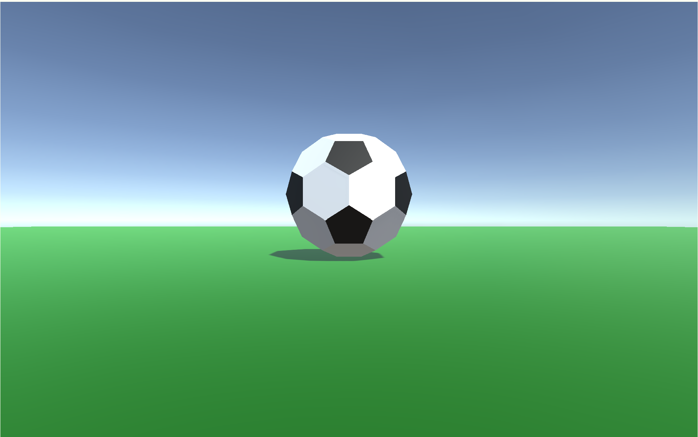

私がUnityでつくったゲームまとめ
Unityで様々なゲーム（主にオセロ）をつくったので、公開したいと思います。
ゲームはどんどん追加していきたいと思います。
※私の気まぐれでこのページがなくなったり大幅に変更されたりするかもしれません。
※基本的にPCで遊ぶことを前提に作られています。
※ゲームのクオリティは期待しないでください。
| 1 | Test  | これはテスト用のページですが、サッカーボールを頑張ってつくったので、残しておきたいと思います。 |
| 2 |
Reversi

|
ただのリバーシ（オセロ）です。コンピュータ対戦もありませんし、オンライン対戦機能もありません。 |
| 3 | Test | これはテスト用のページですが、サッカーボールを頑張ってつくったので、残しておきたいと思います。同じページを3回も表示しているのはテストのため。 |